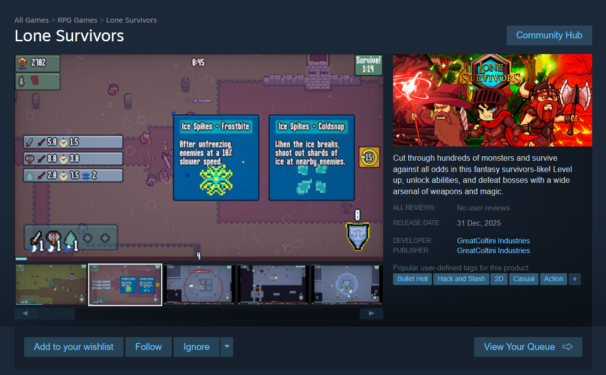

Posted on January 15, 2025 by Colton Donkersgoed
Version 0.0.5 Download
Steamworks Developer
As an update on the business side of things, I have taken some steps towards making my game come a little closer to reality. This has been done with two things:
- I am officially a Steamworks developer:
-
I am also officially an owner of my own business:
GreatColtini Industries

Steam Page
In addition, I have begun working on my Steam page for my game.
It's mostly just placeholder for now, but here is a sneak peek at what it looks like:

I also requested commissioned art for the steam page, as there is a lot of specific requirements
and I wanted someone who had experience making steam pages to create the assets.
You can see on the right-hand side one of the capsules created - so all of the logo/assets
for the game were handmade.
I am very grateful for the work done, and very pleased with the results!

UI Adjustments
Character Selection
I have been making adjustments to the character selection screen,
and this is the newest layout:
I had two goals in mind when making these changes:
- Have space for providing specific character class details
- Present many character options at once without it being too cluttered
In-game UI
Next up for the UI is the in-game portion. Here, I have added in a passive ability tracker.
This tracker will show you what passive abilities you have unlocked and how many slots you have.